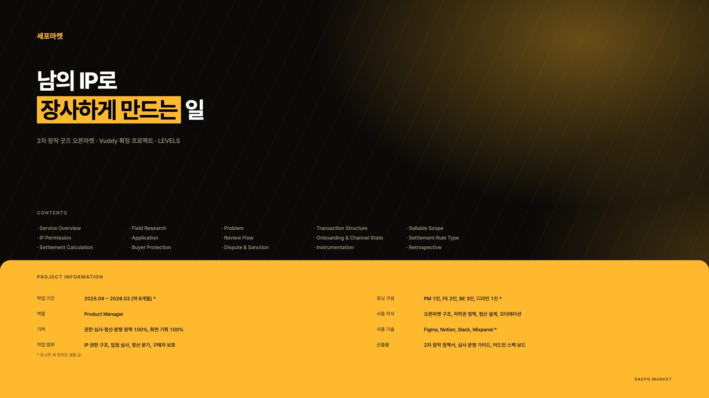
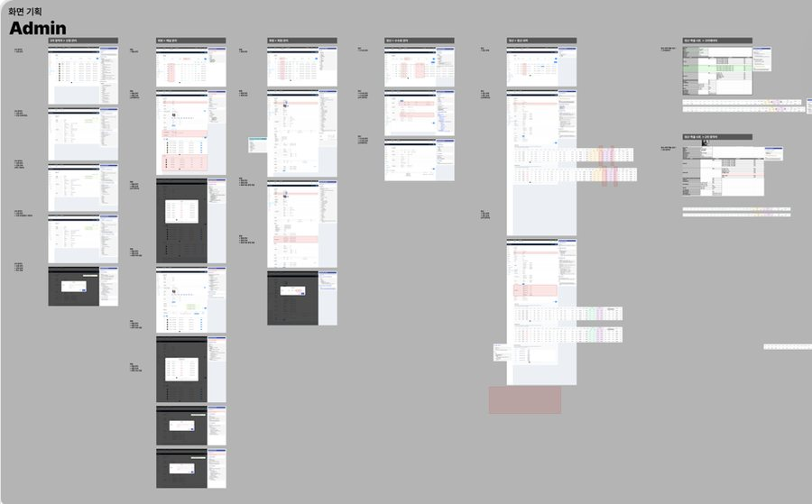
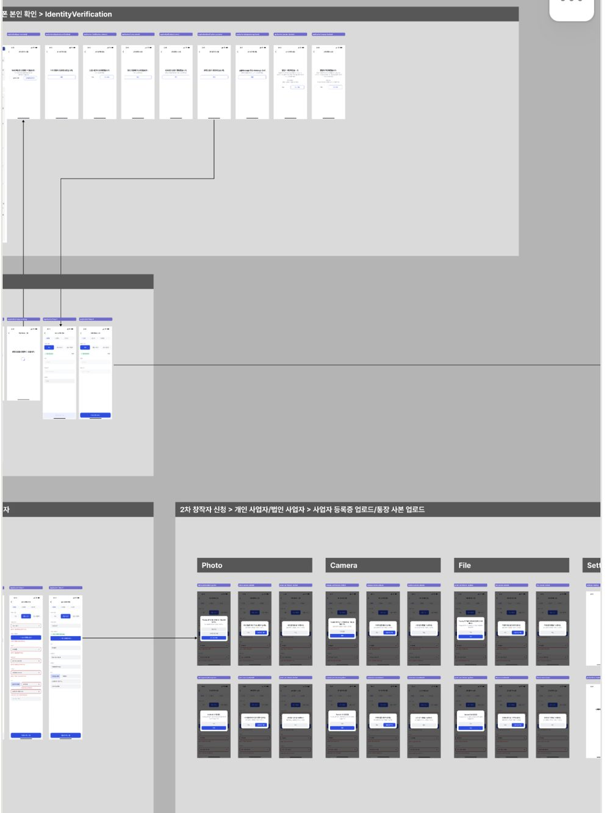

루미
2시간 전
신작 아크릴 스탠드 판매 오픈했습니다. 이번엔 겨울 배경으로 두 종이에요.
Product Manager · Seoul
6년 이상의 스타트업 경험으로 빠른 결정과 커뮤니케이션 역량을 갖추고 있습니다. 디자이너로 시작해 PM으로, 도메인은 바뀌었지만 서비스를 처음부터 만드는 일을 해왔습니다.

두나무의 기술력과 하이브의 콘텐츠 제작 역량이 만나 설립된 회사. 크리에이터 플랫폼 Vuddy(버디)의 커머스·굿즈 기획으로 시작해 가챠, 팬 관리, 채팅, 커뮤니티로 범위를 넓혔고, 2026년부터는 미출시 상태인 신규 AI 서비스의 런칭 기획을 맡고 있습니다.
물류 프로세스의 초기 기획부터 구축·운영까지 담당했으며, 기사·판매자·관제·고객 네 개 사용자군의 프로덕트를 총괄했습니다. 3년 2개월 전 기간 원격 근무.
팬이 셀럽에게 개인화된 영상 메시지를 요청하는 서비스 크림(CREAM)의 출시와 프로덕트 관리를 담당했습니다.
‘비타민에도 취향을 담을 수 있을까’라는 질문에서 출발한 맞춤 건강기능식품 서비스의 웹 출시를 맡았습니다.
미술품 O2O 서비스의 브랜드 아이덴티티를 세우고, 사업 다각화를 위해 기업 대상 그림 구독 서비스를 기획했습니다.
좌우로 넘겨보고, 카드를 열면 전체 페이지를 이어서 볼 수 있습니다.
딜리버스 판매자 시스템(OMS)에서 만들었던 주문 관리 화면을 축약해 다시 만든 것입니다. 실제로 동작합니다 — 검색하고, 정렬하고, 여러 건을 골라 상태를 한 번에 바꿔 보세요.
| 주문번호 | 수취인 | 지역 | 상태 | 등록일 |
|---|
조건에 맞는 주문이 없습니다. 검색어를 지우거나 필터를 전체로 바꿔 보세요.
데이터는 구조를 보여주기 위한 예시이며 실제 고객 정보가 아닙니다.
지표를 만든다는 건 숫자를 모으는 일이 아니라 어디서 사람이 빠지는지 정의하고 그다음 무엇을 할지 정하는 일입니다. 신규 AI 서비스 런칭 전에 설계한 전환 퍼널의 구조를 그대로 옮겼습니다. 각 단계를 눌러 보세요.
수치는 퍼널 구조와 판단 방식을 보여주기 위한 예시입니다.
딜리버스 판매자 시스템(OMS) 1.0의 PRD 목차입니다. 전문 대신 무엇까지 정의하고 개발에 넘겼는지를 보여줍니다. 항목을 누르면 실제로 적었던 내용의 요약과, 그 항목이 없을 때 어떤 질문이 돌아오는지가 함께 나옵니다.
퇴사 후 공개 가능한 범위로 요약했으며, 화주사명과 금액은 제외했습니다.
같은 화면을 정의서 형태로 옮긴 것입니다. 번호를 누르면 그 영역의 기능·정책·예외가 나옵니다. 개발자와 QA가 이 문서만 보고 구현과 검증을 할 수 있는 수준으로 적는 것이 기준이었습니다.
실제 문서에는 각 항목마다 API 응답 조건과 문구 원본이 함께 붙습니다.
화면 한 장 없던 상태에서 런칭 스펙까지. 대화 정책, UGC 제작 도구, 콘텐츠 검열, 전환 퍼널을 하나의 문서 체계로 묶은 과정.
미출시 상태라 서비스명과 화면은 공개하지 않습니다. 대신 0-to-1 기획에서 무엇을 먼저 닫아야 하는지에 대한 판단을 정리했습니다.
확률과 재고가 따로 놀면 재입고마다 수동 보정이 필요합니다. 인벤토리에 확률이 연동되는 구조로 다시 설계한 기록.
크리에이터가 디지털·실물 굿즈를 확률형 상품으로 파는 기능입니다. 판매자도 구매자도 납득할 수 있는 확률 표기와 재고 처리가 핵심 과제였습니다.
보다가 바로 사는 경로를 만드는 일. Shoplive SDK와 OBS 송출 위젯을 붙여 방송 화면과 판매를 하나로 이은 기획.
크리에이터가 라이브를 켜면 시청과 구매가 다른 화면에서 일어나고 있었습니다. 방송을 보다가 상품을 확인하려면 이탈해야 했고, 돌아오면 흐름이 끊겼습니다. 시청 화면 안에서 구매가 끝나도록 경로를 다시 짰습니다.
크리에이터가 팬을 알아볼 수 있게 하는 장치. 누적 결제 기준 등급과 부스트 과제를 스튜디오·앱 양쪽 스펙으로 통합한 작업.
팬은 자신이 알아봐지길 바라고, 크리에이터는 누가 오래 남아 있는지 알고 싶어 합니다. 두 요구를 하나의 등급 체계로 묶었습니다.
커뮤니티를 체류 시간이 아니라 구매 전환의 관점에서 설계한 사례. 게시판 신규 기획과 댓글 고도화.
커뮤니티는 흔히 체류 시간으로 평가되지만, 커머스 플랫폼에서는 그것만으로 투자를 정당화하기 어렵습니다. 댓글에서 구매로 이어지는 경로를 먼저 그린 뒤 기능을 정했습니다.
실시간 배송 추적, 통합 물류 관리, 쇼핑몰 솔루션 연동, 매출 데이터 분석까지. 운영 효율과 개발 생산성을 함께 끌어올린 판매자용 시스템.
화주사가 직접 주문을 올리고 배송 상태를 확인하는 판매자용 시스템입니다. 자사 판매자 시스템을 갖춰 신규 화주사를 확보하는 것이 목표였습니다.
현장 상황을 반영한 자동 분류와 클러스터링 개선, 기사 실시간 위치 모니터링, 데이터 기반 경로 최적화로 리드타임을 줄인 관제 시스템.
자동 분류가 당일 현장 상황을 반영하지 못해 허브에서 재분류가 반복되는 문제에서 출발했습니다.
평균 6시간 내 당일 배송·반품을 위한 기사용 앱. 허브 앤 스포크의 지연 문제를 모듈화된 프로세스와 자동화로 푼 리서치 및 UX 개선 사례.
평균 6시간 이내 당일 배송과 반품을 처리하는 배송 기사용 앱입니다. 허브 앤 스포크 구조의 지연 문제를 모듈화된 프로세스로 풀었습니다.
Retool로 복잡한 시스템을 직접 구현하며 개발 의존도를 낮춘 과정. 로우코드가 물류 업계의 협업과 의사소통에 어떤 역할을 하는지에 대한 기록.
Retool로 복잡한 운영 시스템을 직접 구현하며 개발 의존도를 낮춘 과정을 정리한 글입니다.
로우코드 플랫폼으로 기능을 빠르게 구현하고 협업 속도를 높인 경험. 시간 단축, 효율 향상, 비용 절감으로 이어진 개발 방식의 전환.
로우코드 플랫폼으로 기능을 빠르게 구현하고 협업 속도를 높인 경험을 네 편으로 나눠 기록했습니다.
배송 조회, 반품 접수, 실시간 알림을 담은 고객용 웹앱. 광고 배너 기반 추가 수익 모델과 KPI 중심 성과 측정 방식을 함께 설계.
고객이 배송 상태를 직접 확인하고 반품까지 접수하는 웹앱입니다. 광고 배너를 통한 추가 수익 모델을 함께 설계했습니다.
팬이 셀럽에게 개인화된 영상 메시지를 받는 플랫폼. 예약 시스템, 맞춤 메시지 옵션, 리뷰 시스템과 수수료·프리미엄 중심 수익 모델 설계.
팬이 셀럽에게 개인화된 영상 메시지를 요청하는 플랫폼입니다. 팬덤 문화를 수익 구조로 연결했습니다.
팬들이 소장품을 나누고 교환하는 플랫폼. 등록·검색·교환·채팅 기능과 구독, 프리미엄 멤버십, 광고 기반 수익 구조를 함께 기획.
팬들이 소장품을 나누고 교환하는 플랫폼 기획입니다.
개인 맞춤형 비타민·건강기능식품 웹 서비스의 UX 설계와 브랜드 경험 디자인.
‘비타민에도 취향을 담을 수 있을까’라는 질문에서 시작한 맞춤 건강기능식품 서비스입니다.
21일간 건강 습관을 만드는 플랫폼. 맞춤 알림, 게임화된 도전, 전문가 상담, AI 챗봇과 월간 구독 모델로 지속적인 참여를 설계.
새로운 행동이 습관이 되는 21일을 축으로 한 헬스케어 플랫폼 기획입니다.
2024년 정산 지연 사태를 구조, 자금 관리, 내부 통제, 규제의 관점에서 정리. 결제 생태계에서 PG사와 VAN사가 하는 일을 함께 짚은 스터디.
2024년 정산 지연 사태를 결제 생태계 구조의 관점에서 정리한 스터디입니다.
팬데믹 이후 게더타운과 원격 협업 툴을 도입한 과정. 스탠드업과 해피아워로 관계를 만들고, 팀원의 성향 차이를 고려한 리모트 운영 방식.
팬데믹 이후 게더타운과 원격 협업 툴을 도입해 4년간 풀리모트로 일한 경험을 정리했습니다.
건물 운영 단계의 탄소 배출 감축을 위한 비즈니스 모델. 스마트 난방 제어와 히트 펌프, 배출 관리 소프트웨어, 에너지 효율 컨설팅을 묶은 제안.
2050 탄소 중립 목표에서 건물 운영 단계의 배출 감축에 초점을 맞춘 비즈니스 모델 기획입니다.
예술 작품의 접근성을 높이고 작가에게 새로운 판로를 여는 플랫폼. 시장 분석과 사용자 흐름, 구독료·경매 수수료·스폰서십 수익 모델을 정리.
예술 작품의 접근성을 높이고 작가에게 새로운 판로를 여는 플랫폼 기획입니다.
딜리버스에서는 판매자 어드민(OMS)을 Retool로 직접 개발해 v2·v3까지 배포했습니다. 기획과 구현 사이에 통역이 필요 없다는 뜻입니다.


